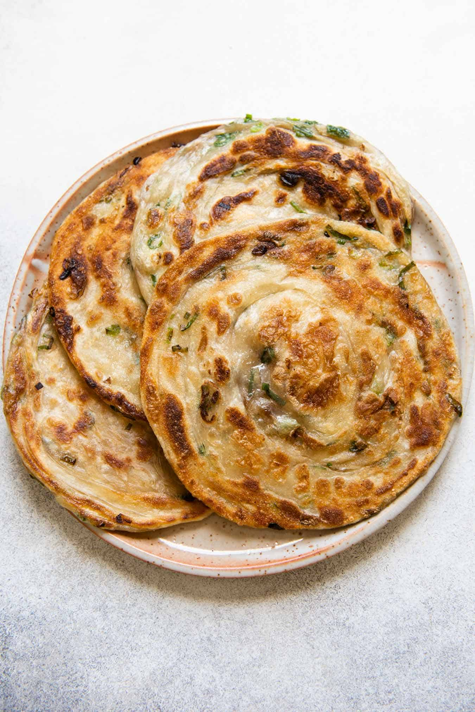

Scallion Pancakes

Description:
A traditional Chinese dish that is flaky and crispy on the outside but light and airy on the inside. This recipe creates one single serving!
Ingredients:
- All Purpose flour (300g)
- Kosher salt or sea salt (1 tsp)
- Water (185g)
- Peanut or canola oil
- Finely diced shallots (1/2 cup)
- Thinly sliced shallots (1/2 cup)
- Five-spice powder (1 tsp)
Steps:
Making the Dough
- In a large bowl, whisk together the flour and salt. Gradually pour in the water, stirring everything together with a fork or wooden spoon.
- Oce the water is all absorbed by the flour, start kneading the dough together with your hands. When you have incorporated all the loose flour into the dough, turn the dough onto a lightly floured surface. Knead the dough for another 6 to 7 minutes. The dough should be elastic and quite smooth on the top. To see if the dough has been kneaded enough, rip out a golf ball-sized piece of dough, and pull it apart gently, as if you are tugging the dough at 4 corners. You should be able to stretch the dough out enough so that the center is translucent without the dough ripping apart. One or two minor tears around your fingers is okay. Shape the dough into a ball.
- Lightly grease a bowl with oil and place the ball of dough inside. Cover it with a damp towel or plastic wrap and let it rest for 45 minutes to 1 hour.
Preparing the Shallots
- Heat a tablespoon of canola oil in a pan over medium heat. Add the shallots and cook them for 2 to 3 minutes, until they start to soften.
- Turn off the heat and transfer the cooked shallots into a bowl.
- Shape the Pancakes
- Take the rested dough out of the bowl and divide it into 4 pieces, about 120g to 125g each. Shape each piece into a ball. Cover the balls of dough with a dry towel or piece of plastic wrap.
- Lightly grease your work surface with oil (can be a large wooden board or marble slab). Roll out the dough into a thin rectangle. The dough should be thin enough that you can almost see the surface underneath. I never roll out a perfectly shaped rectangle, so do not worry if yours look lopsided. Also don’t sweat about any small tears you might create when rolling out the dough.
- Pour about 2 teaspoons of oil over the rolled out dough and use your hands to rub over the surface. Lightly dust the dough with about 1/8 to 1/4 teaspoon five-spice powder (I used this dusting wand). Sprinkle a quarter of the cooked shallots and sliced scallions over the dough. Fold the dough into thirds: grab the bottom length of the dough and fold it over the center of the dough, leaving a third of the dough unfolded. Next, grab the top third of the dough and fold it down over the center. Give everything one more fold. Don’t fold the dough too tightly—a little bit of air in between the folds is perfectly fine. Gather the dough together and give it a little tug on the ends to stretch out the dough just a little.
- Starting from one end, start curling the dough, creating a snail-like shape. You can either tuck the other end underneath the curled up dough or lay it on top. Repeat for the other remaining balls of dough, making sure to grease the work surface again if necessary.
Cooking the Pancakes
- Lightly grease the work surface again. Take one of the curled up balls of dough and roll it out into a thin circle. The rolling might force out some of the shallots and scallions, and that’s okay. It happens to me all the time.
- Heat a 12-inch skillet with 1 1/2 tablespoons of canola oil over medium-high heat. Transfer the pancake to the pan and cook it for 3 to 4 minutes, until the pancakes are golden brown, flipping about halfway through. Transfer the pancakes to a wire cooling rack. If you don’t have a rack, transfer the cooked pancakes to a plate.
- While one pancake is cooking, roll out the next one. Add more oil to the pan and cook the remaining pancakes. These scallion pancakes are best consumed while they’re still warm. You can tear them apart or cut them into small wedges. Serve on their own or my soy and vinegar dumpling sauce, sweet chili sauce, or chili oil.
And that's it! Bon Appetit!